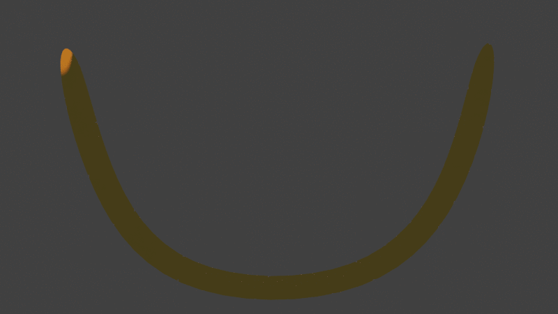

GIFs made by me
My very first seamless GIF using blender. For my starting looping gif, this is what I was able to make.

This second gif, I created yet another looping gif which Out of the other GIFs, this animation demonstatres one of the rules of animation which involves anticipation.
I managed to create this GIF when I became more advanced at making animations and having a deeper understanding in using keyframes. A seamless and comical loop that demonstrates the scenarion of a robber and the colors of the police in the background.